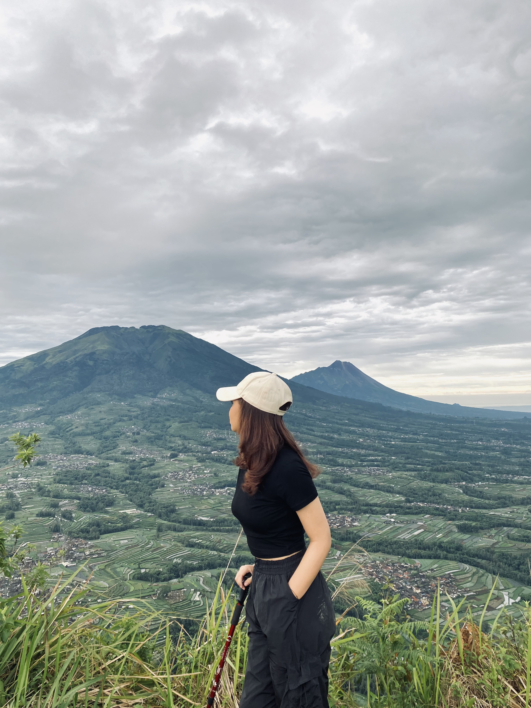

Carmelita Cynthia Dagur
TENTANG SAYA
Mahasiswa Informatika dengan performa akademik dan kemampuan interpersonal yang baik. Memiliki kemampuan menggunakan bahasa pemrograman seperti HTML, Java, dan PHP serta ahli dalam menggunakan Microsoft Excel. Mahir dalam analisis data, pengelolaan dan visualisasi data, serta pemodelan data untuk mendukung pengambilan keputusan. Saat ini, ingin mengembangkan kemampuan di bidang data analyst dalam lingkungan profesional.